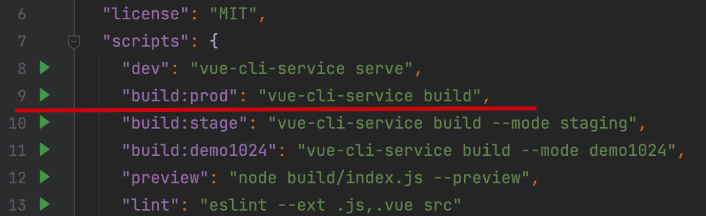
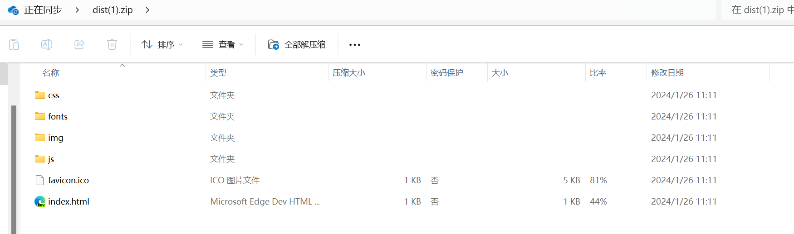
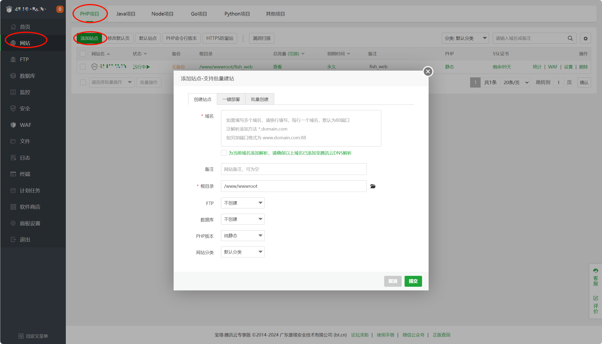
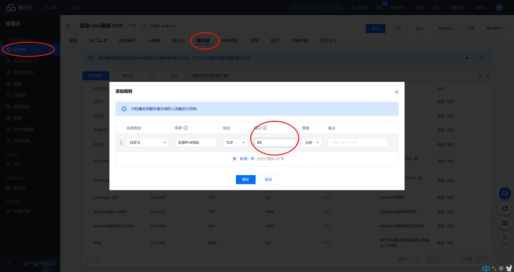
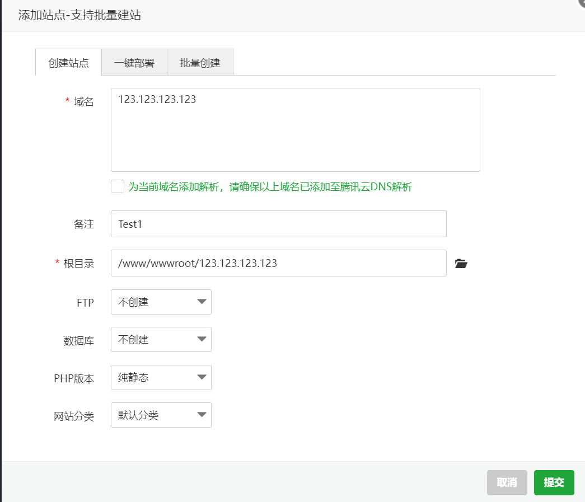
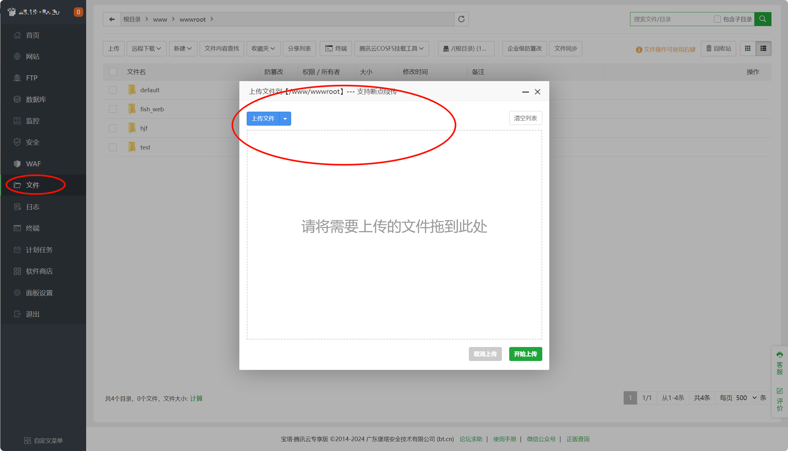
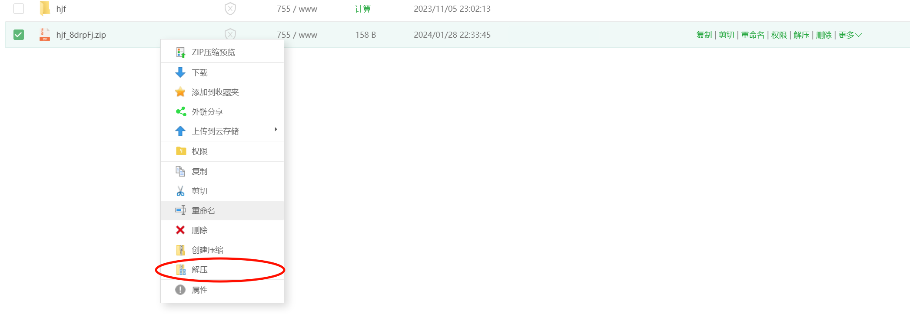
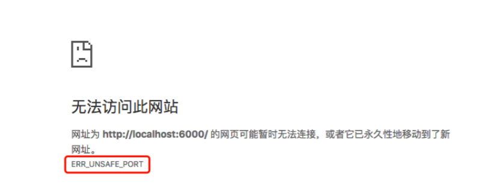
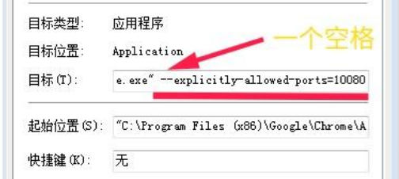

Vue项目的打包
在你的Vue项目中运行以下命令
npm run dev
或者
npm run build
或者是在webstorm的package.json运行build  运行之后生成dist文件夹，并对其进行压缩 
项目在宝塔面板部署
新建网页
1、登录宝塔面板并新建网站  2、输入域名，例如自己域名或IP地址，可使用默认端口，如不输入端口则使用默认80端口 注意:要在腾讯云中防火墙放行相应端口  3、选择网页内容目录如使用默认的地址可不更改如图所示并点击提交 
上传打包文件
1、如图所示并上传压缩包，将压缩包上传到上述选择的目录中  2、右键将其解压，在检查确定解压完整性后将其压缩包删除 
访问网站
在地址栏输入自己的IP地址即可访问网站，如自定义端口号，则后面需添加冒号后输入端口号
踩坑记录
自定义端口号
1、除非特殊情况，要不然使用默认80端口，因为浏览器对端口号进行限制
一、问题复现 使用自定义105端口对网页进行打开并ERR_UNSAFE_PORT报错  二、解决方案
1、更换端口 2、改变浏览器安全设置
Google Chrome浏览器 关闭浏览器->桌面找到浏览器图标->点击右键选择属性->在【目标】后追加空格+–explicitly-allowed-ports=10080(见下面配置)->点击【保存】->双击图标，重新打开浏览器。
--explicitly-allowed-ports=10080
 Edge浏览器
搜索栏中输入regedit，回车打开系统注册表，进入计算机\HKEY_LOCAL_MACHINE\SOFTWARE\Policies\Microsoft\Edge\ExplicitlyAllowedNetworkPorts，此路径不一定存在，可自行创建。然后在 ExplicitlyAllowedNetworkPorts 新建一个名称为 1 的字符串值，修改其值为10080。最后重启浏览器，访问端口为10080的地址。 三、部分非安全端口列表
1, // tcpmux
7, // echo
9, // discard
11, // systat
13, // daytime
15, // netstat
17, // qotd
19, // chargen
20, // ftp data
21, // ftp access
22, // ssh
23, // telnet
25, // smtp
37, // time
42, // name
43, // nicname
53, // domain
77, // priv-rjs
79, // finger
87, // ttylink
95, // supdup
101, // hostriame
102, // iso-tsap
103, // gppitnp
104, // acr-nema
109, // pop2
110, // pop3
111, // sunrpc
113, // auth
115, // sftp
117, // uucp-path
119, // nntp
123, // NTP
135, // loc-srv /epmap
139, // netbios
143, // imap2
179, // BGP
389, // ldap
465, // smtp+ssl
512, // print / exec
513, // login
514, // shell
515, // printer
526, // tempo
530, // courier
531, // chat
532, // netnews
540, // uucp
556, // remotefs
563, // nntp+ssl
587, // stmp?
601, // ??
636, // ldap+ssl
993, // ldap+ssl
995, // pop3+ssl
2049, // nfs
3659, // apple-sasl / PasswordServer
4045, // lockd
6000, // X11
6665, // Alternate IRC
6666, // Alternate IRC
6667, // Standard IRC
6668, // Alternate IRC
6669, // Alternate IRC
感谢：知乎https://zhuanlan.zhihu.com/p/383077079文章参考
...